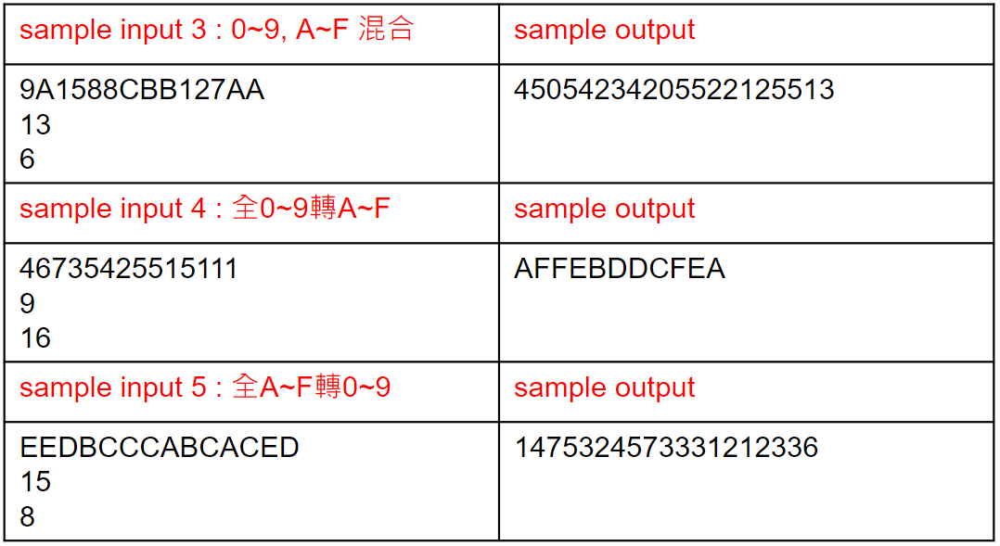

進制轉換 (進階題)
將給定進制的無號數字轉換為指定進制,輸入及輸出使用 0~9 及 A~F 表示,其中 A~F 相當於十進位的 10~15。

進制轉換 (進階題)

進制轉換 (進階題)

Tips
#include<stdio.h>
#include<stdbool.h>
int main(void) {
char number[16]; // 待轉換數字的進制
char converted_number[30]; // 存十進制整數除指定的轉換進制的餘數
int before_radix; // 待轉換數字的進制
int after_radix; // 指定的轉換進制
unsigned long num = 0; // 轉換後的十進制整數
bool error = false;
char table[17] = "0123456789ABCDEF";
// 輸入待轉換數字
// 輸入待轉換數字的進制(2~16)
// 輸入指定的轉換進制(2~16)
// 判斷待轉換數字的進制和指定的轉換進制是否在2~16內
// 將待轉換數字的進制整數按權值展開後轉換為十進制整數
// 檢查輸入是數字還是字母
// 檢查轉換數字與進制是否矛盾
// 十進制整數採用“除 指定的轉換進制 取餘”轉換為指定的轉換進制整數
// 將字串converted_number反轉後輸出
return 0;
}
Tips
// 將待轉換數字的進制整數按權值展開後轉換為十進制整數
for (int i = 0; number[i] != '\0'; i++) // '\0'在c語言中代表著字串的結束
{
// 檢查輸入是數字還是字母
if(number[i] >= '0' && number[i] <= '9')
{
// 檢查轉換數字與進制是否矛盾
if(number[i] - '0' >= before_radix)
{
???
}
else
num = num * before_radix + number[i] - '0';
}
else
{
if(number[i] - 'A' + 10 >= before_radix)
{
???
}
else
???
}
}
for迴圈
#include
int main()
{
char s[] = "Hello";
for(int i = 0; i < 10; i++) // for(初始變數; 判斷式; 遞增式){}
{
printf("%d ", i);
}
printf("\n");
for(int i = 0; s[i] != '\0'; i++)
{
printf("%c ", s[i]);
}
return 0;
}
0 1 2 3 4 5 6 7 8 9
H e l l o
ASCII
字母a、b、C、D...以及數字0、1...還有一些常用的符號（例如*、#、@...）在電腦中儲存時也要使用二進位數來表示，而具體用哪些二進位數字表示哪個符號，這就是編碼。如果不同的電腦要想互相通信而不造成混亂，那麼每台電腦就必須使用相同的編碼規則，於是美國有關的標準化組織就推出了ASCII編碼。

bool
C 語言標準(C89) 沒有定義布爾類型，如果你使用 true 和 false，會出現錯誤。
C99 有提供一個標頭檔
#include <stdio.h>
#include <stdbool.h>
int main() {
bool error = true; // 可改寫為 bool error = 1;
if(error == false)
printf("0");
else
printf("1");
return 0;
}
資料型態
注意：以下是典型的資料位長和範圍。編譯器可能使用不同的資料位長和範圍。
請參考具體的參考。

資料型態
標準標頭檔<llimits.h> 中說明了基礎資料的長度

#include <stdio.h>
#include <limits.h>
int main() {
printf("The max value ot type unsigned is %u\n", UINT_MAX);
printf("The max value of type unsigned long is %lu\n", ULONG_MAX);
printf("The max value of type unsigned long long is %llu\n", ULLONG_MAX);
return 0;
}
The max value ot type unsigned is 4294967295
The max value of type unsigned long is 18446744073709551615
The max value of type unsigned long long is 18446744073709551615